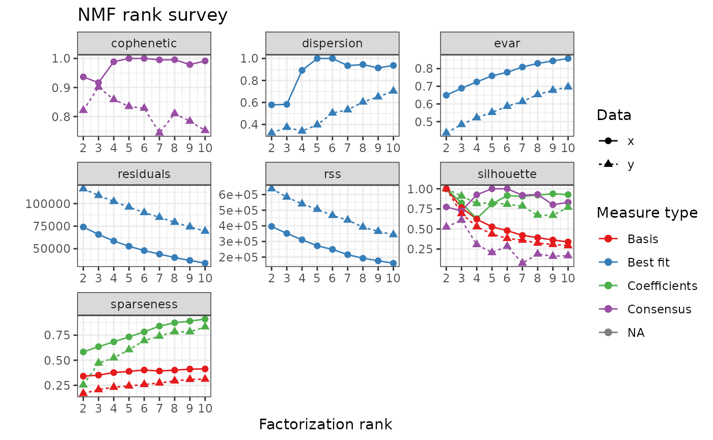
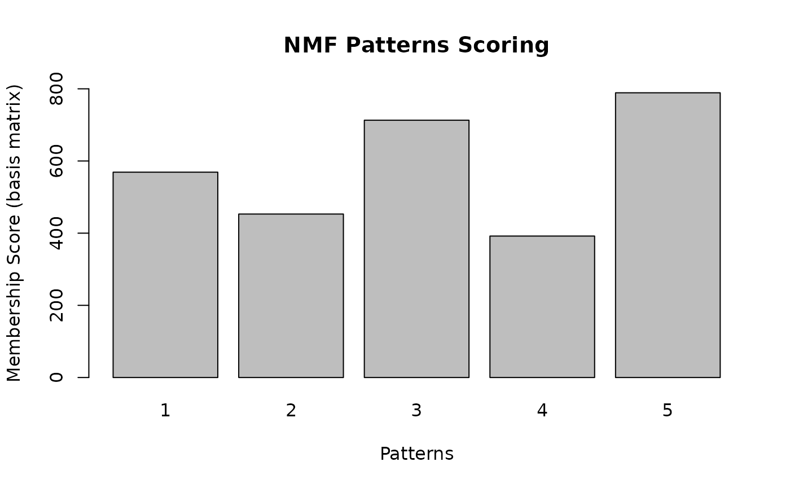
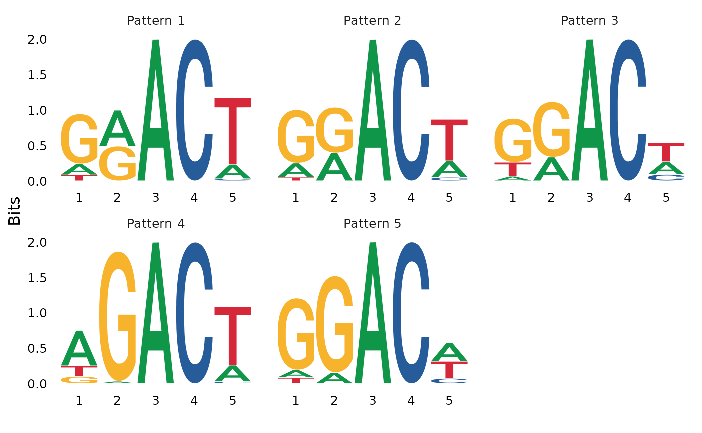
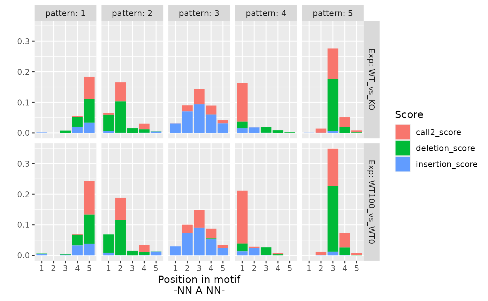
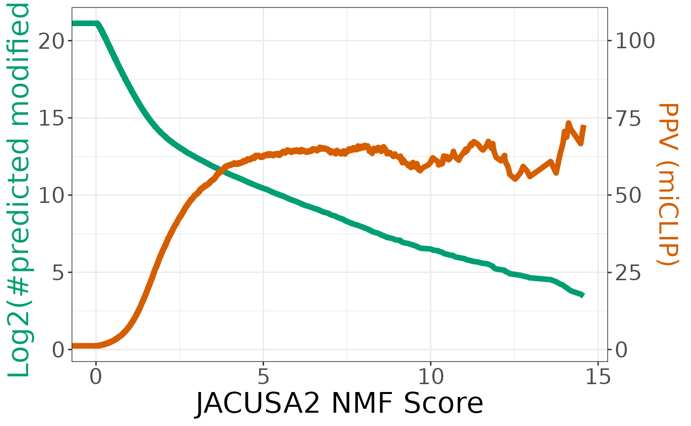
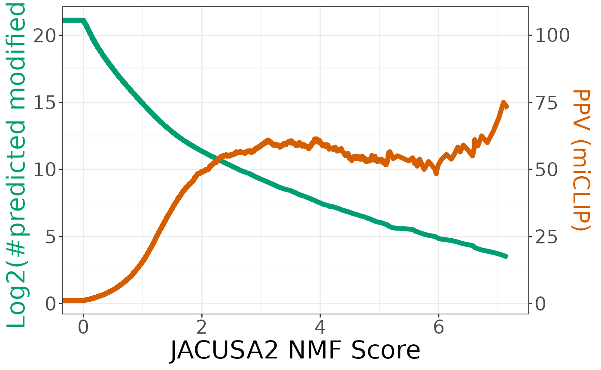

Analysis of Nanopore HEK293 with JACUSA2helper
Christoph Dieterich, Michael Piechotta
2023-01-18
Source:vignettes/web_only/JACUSA2helper-nanopore.Rmd
JACUSA2helper-nanopore.Rmd- This vignette requires the latest version of JACUSA2helper - please update*
In the following, the workflow for use case 3 from Piechotta et al. (2021) is presented. Data for use cases 1-3 can be downloaded to repeat the analysis.
The following packages need to be loaded:
library(JACUSA2helper)
library(GenomicRanges)
library(BSgenome)
library(GenomeInfoDb)
library(plyranges)
library(magrittr)
library(dplyr)
library(ggplot2)
library(pROC)
library(VennDiagram)
library(NMF)Non-negative Matrix Factorization
Here, we briefly introduce Non-negative Matrix Factorization (NMF). This section uses the notation from NMF vignette.
Non-negative Matrix Factorization tries to find an approximation of: \[X \approx W H,\] where:
- \(X\) is a non-negative \(n \times p\) matrix,
- \(W\) is a non-negative \(n \times r\) matrix (basis matrix), and
- \(H\) is a non-negative \(r \times p\) matrix (coefficient matrix).
\(r\) is called the factorization rank.
Check NMF vignette for details on optimization and algorithms.
In the following, we will explain how to convert JACUSA2 output to an appropriate matrix \(X\) and perform NMF.
General workflow
Use read_result to read JACUSA2 output and filter the
data set.
To repeat the Nanopore analysis from Piechotta et al. (2021), download the following data:
- WT vs. KO and
- WT100 vs. WT0.
Depending on your bandwidth the Download might take some time. Download the data, start R and change into the directory where you have saved the files from zenodo. Make sure, you have approx. 20GB of main memory available.
Pre-processing
We start to organize the data:
# files to read
files <- c(
"WT_vs_KO_call2_result.out.gz",
"WT100_vs_WT0_call2_result.out.gz"
)
# descriptions corresponding to files
meta_conds = c(
"WT_vs_KO",
"WT100_vs_WT0"
)meta_conds is used as a concise description of each file
to distinguish the JACUSA2 outputs.
The pre-processing workflow for one file can be summarized into the following steps:
- Read
- Read JACUSA2 output.
- Filter
- Employ coverage and other filters to remove not interesting sites.
- Add meta condition
- Add concise description of each file.
- Reduce
- Select relevant data column.
We explain the pre-processing workflow for one file and generalize to arbitrary number of files (here two).
Read
The underlying function of read_result is
data.table::fread - check the respective help page for
details on additional options. Depending on your machine increase
nThreads to use more threads to parse a file.
The “info” field contains meta information for sites, such as detailed INDEL statistics. To save memory, we manually unpack the “info” field and select the following keys:
-
insertion_scoreand -
deletion_score.
We will use these score values during model training.
i <- 1 # WT_vs_KO
print(files[i])
#> [1] "/home/michael/TODO/JACUSA2helper/WT_vs_KO_call2_result.out.gz"
print(meta_conds[i])
#> [1] "WT_vs_KO"
wt_vs_ko_res <- read_result(files[i], nThread = 2, unpack = c("insertion_score", "deletion_score"))Filter
The JACUSA2 output files from Zenodo have been already filtered to retain sites with coverage \(> 4\) in all BAM files.
We use the following filter:
- retain sites on chromosome 1-22, MT, and X.
print(paste0("Sites BEFORE filtering: ", length(wt_vs_ko_res)))
#> [1] "Sites BEFORE filtering: 8891484"
# reduce set of known sequences
seqlevels(wt_vs_ko_res, pruning.mode = "coarse") <- c(1:22, "MT", "X")
wt_vs_ko_filtered <- wt_vs_ko_res %>% filter(
seqnames %in% c(as.character(1:22), "MT", "X")
)
print(paste0("Sites AFTER filtering: ", length(wt_vs_ko_filtered)))
#> [1] "Sites AFTER filtering: 8880996"Add meta condition
We add a concise description of files to each result object.
mcols(wt_vs_ko_filtered)$meta_cond <- factor(meta_conds[1], meta_conds)
table(wt_vs_ko_filtered$meta_cond)
#>
#> WT_vs_KO WT100_vs_WT0
#> 8880996 0WT100_vs_WT0 is zero because we haven’t added the
respective file yet.
Add reference sequence information
Sequence lengths are necessary to check if coordinates are valid. Initially, a JACUSA2 result object has no information about the underlying reference sequence.
seqlengths(wt_vs_ko_res)
#> 1 2 3 4 5 6 7 8 9 10 11 12 13 14 15 16 17 18 19 20 21 22 MT X
#> NA NA NA NA NA NA NA NA NA NA NA NA NA NA NA NA NA NA NA NA NA NA NA NAWe can either specify the genome (see
?GenomeInfoDb::seqinfo) or add reference sequence
information with seqlengths():
# load the package that corresponds to your genome
library("BSgenome.Hsapiens.NCBI.GRCh38")
seqlengths(wt_vs_ko_res) <- seqlengths(BSgenome.Hsapiens.NCBI.GRCh38)[names(seqlengths(wt_vs_ko_res))]
seqlengths(wt_vs_ko_res)
#> 1 2 3 4 5 6 7 8
#> 248956422 242193529 198295559 190214555 181538259 170805979 159345973 145138636
#> 9 10 11 12 13 14 15 16
#> 138394717 133797422 135086622 133275309 114364328 107043718 101991189 90338345
#> 17 18 19 20 21 22 MT X
#> 83257441 80373285 58617616 64444167 46709983 50818468 16569 156040895Create matrix \(X\)
We continue to reduce the data set by selecting only relevant columns
and renaming the “score” column to “call2_score” for consistency: Given
a JACUSA2 result object, the function create_data() will
create a data matrix, that will be used in NMF. In brief, relevant score
columns are rearranged and a region or context around each Adenin site
is created.
data_matrix = create_data(wt_vs_ko_filtered)
data_matrix[is.na(data_matrix)] <- 0
data_matrix[data_matrix < 0] <- 0
colnames(data_matrix)
#> [1] "WT_vs_KO_call2_score_1" "WT_vs_KO_call2_score_2"
#> [3] "WT_vs_KO_call2_score_3" "WT_vs_KO_call2_score_4"
#> [5] "WT_vs_KO_call2_score_5" "WT_vs_KO_deletion_score_1"
#> [7] "WT_vs_KO_deletion_score_2" "WT_vs_KO_deletion_score_3"
#> [9] "WT_vs_KO_deletion_score_4" "WT_vs_KO_deletion_score_5"
#> [11] "WT_vs_KO_insertion_score_1" "WT_vs_KO_insertion_score_2"
#> [13] "WT_vs_KO_insertion_score_3" "WT_vs_KO_insertion_score_4"
#> [15] "WT_vs_KO_insertion_score_5"This operation concludes the pre-processing workflow for one file.
Generalize
So far, we have shown a detailed description of pre-processing one file. In the following, we provide code for arbitrary number of results/experiments/meta conditions:
# pre-processing workflow for arbitrary number of files and meta conditions
results <- mapply(function(file, meta_cond) {
result <- read_result(file, nThread = 3, unpack = c("insertion_score", "deletion_score")) %>%
filter(seqnames %in% c(as.character(1:22), "MT", "X"))
seqlevels(result, pruning.mode = "coarse") <- c(1:22, "MT", "X")
result <- result[, c("score", "insertion_score", "deletion_score", "filter", "ref")]
# add file specific condition
mcols(result)$meta_cond <- factor(meta_cond, meta_conds)
return(result)
}, files, meta_conds, SIMPLIFY = FALSE, USE.NAMES = FALSE
)We need to convert results to a GRanges object and we
add sequence information.
# convert and concatenate GenomicRanges
results <- unlist(GRangesList(results))
# add reference sequence information
seqlengths(results) <- seqlengths(BSgenome.Hsapiens.NCBI.GRCh38)[names(seqlengths(results))]
# retained sites per file / meta condition
table(results$meta_cond)
#>
#> WT_vs_KO WT100_vs_WT0
#> 8880996 11147905results now consists of filtered JACUSA2 calls for sites
from all files and meta_conds.
The overlap of called sites from each experiment can be investigated with the following:
# add unique ID for a site: contig:start-end:strand
results$id <- as.character(results)
# venn diagram of sites that are shared between files
meta_cond_plt <- venn.diagram(
tapply(results$id, results$meta_cond, c),
filename = NULL,
lwd = 1,
cex = 0.5,
fontfamily = "sans",
cat.cex = 0.9,
cat.default.pos = "outer",
cat.fontfamily = "sans",
)
grid.newpage()
grid.draw(meta_cond_plt)Create data matrix
We use create_data() to create the data matrix that will
be used to learn the model. We add a context of 2nt around each site
creating a region (-NNANN-) where the putative
modification site is positioned in the middle (= position 3) of the
motif. Internally, create_data() removes sites that are
within homopolymers (JACUSA2 filter flag: “Y”). Each column name of the
data matrix has the following format:
{meta_cond}_{score}_{position}, where:
meta_cond-
is meta condition information (\(meta_cond \in
{WT_vs_KO, WT100_vs_WT}\))
score -
type of score \(score \in {call2, insertion,
or deletion}\)
position - position information within the region (\(position \in {1, ..., 5}\)).
data_matrix <- create_data(results)
# set sensible defaults
data_matrix[is.na(data_matrix)] <- 0
data_matrix[data_matrix < 0] <- 0Next, we filter the data matrix and require that each region has to be covered in both experiments.
# contains score sum for each meta condition
score_sums <- rowsum(
t(data_matrix),
strcapture(
paste0("^(", paste0(meta_conds, collapse = "|"), ")"),
colnames(data_matrix),
data.frame(meta_cond = character())
)$meta_cond
) %>% t()
# score sum must be > 0 in all experiments
keep <- rowSums(score_sums > 0) == length(meta_conds)
data_matrix <- data_matrix[keep, ]We will continue adding meta information to the data matrix to study the properties of sites.
Add sequence
In order to add information if a site is contained in a DRACH motif, we need to retrieve the sequence context for a site.
If you have a custom FASTA sequence, use
Rsamtools::FaFile to load the FASTA file. Otherwise, load a
genome from via BSgenome.
# retrieve sequence and convert to character vector
data_matrix$motif <- getSeq(BSgenome.Hsapiens.NCBI.GRCh38, GRanges(rownames(data_matrix))) %>%
as.character() %>%
unname()
# number of top 10 motifs
sort(table(data_matrix$motif), decreasing = TRUE)[1:10]
#>
#> CCAGC GCAGC GGAGG CCAGG CCACC AGAAG GCAGG TGAAG GGAAG CCAAG
#> 28807 28624 23477 23187 22785 22400 21197 20452 19651 19590Next, we add an indicator variable if the DRACH motif ([AGT][AG]AC[ACT]) is present:
data_matrix$DRACH <- "no"
data_matrix$DRACH[grep("[AGT][AG]AC[ACT]", data_matrix$motif)] <- "yes"
tbl <- table(data_matrix$DRACH)
names(tbl) <- names(tbl) %>%
paste0(
" (",
paste0(
scales::label_comma()(as.vector(tbl)),
"; ",
scales::percent_format()(as.vector(tbl / sum(tbl)))
),
")"
)
# plot distribution of DRACH motifs
pie(tbl, mai = "DRACH motif present")
Use saveRDS(data_matrix, file = "data_matrix.rds") to
store the current state. Use
data_matrix <- readRDS("data_matrix.rds") to restore
previous state.
Use NMF on Nanopore data
The learning part can be omitted. Use
data(m6a_nmf_results) from Piechotta
et al. (2021) and and continue to Visualize NMF.
Continue reading Overlap with
miCLIP data, to understand how object m6a_nmf_results
can be created.
Overlap with miCLIP data
Next, we use existing miCLIP data to train the model.
The data can be investigated with: data(m6a_miclip). It
consists of 3 experiments:
The column “experiments” indicates the source of a site.
Plot venn diagram of shared CLIP sites:
miclip_plt <- m6a_miclip %>%
mutate(site = as.character(.)) %>%
as.data.frame() %>%
tidyr::separate_rows(experiments) %>%
with(tapply(site, experiments, list)) %>%
venn.diagram(
filename = NULL,
lwd = 1,
cex = 0.5,
fontfamily = "sans",
cat.cex = 0.9,
cat.default.pos = "outer",
cat.fontfamily = "sans",
)
grid.newpage()
grid.draw(miclip_plt)We add miCLIP information to data_matrix:
data(m6a_miclip)
# Add region around site to miCLIP data
m6a_miclip_region <- extend(m6a_miclip, left = 2, right = 2)
m6a_miclip_region$experiments <- m6a_miclip$experiments
miclip_covered <- subsetByOverlaps(
m6a_miclip_region,
GRanges(rownames(data_matrix)),
type = "equal"
)
data_matrix$experiments <- "-"
data_matrix[as.character(miclip_covered), "experiments"] <- miclip_covered$experiments
table(data_matrix$experiments)
#>
#> - Boulias Boulias,Koertel Boulias,Koertel,Koh
#> 2255751 8490 4966 2916
#> Boulias,Koh Koertel Koertel,Koh Koh
#> 850 7831 2249 2968Next, we create the data matrix (corresponds to \(X\) in \(N \approx W H\)) of sites that are contained in all three data sets: Boulias, Koertel, and Koh. It will be used to learn the modification patterns:
# retain sites that overlap with 3 miCLIP experiments
keep <- data_matrix$experiments == "Boulias,Koertel,Koh"
train_matrix <- data_matrix[keep, ]
table(train_matrix$DRACH)
#>
#> yes
#> 2916Compute factorizaion rank(s)
An important parameter in NMF is the factorization rank \(r\) that defines the number of features to approximate \(X\) - a similar parameter such as the number of clusters in the k-means algorithm. We will compute multiple factorizations with different values for \(r\) and use surrogate measures to find an appropriate value.
Make sure that the data/train matrix (\(X\)) contains only numeric values before
you start the factorization of \(X\) to
\(W H\). The functions that does the
calculations in JACUSA2helper is nmf_learn(x, mods), where
x is the data/train matrix and mods is a GRanges object of
known modifications.
Internally, JACUSA2helper uses the NMF package. Check NMF
vignette for details on parameters. The default parameters in
JACUSA2helper are set to
nmf_args = list(rank = 2:10, nrun = 10, seed = 123456, .opt = "vp4").
For example argument .opt=pv3 instructs to use 3 cores -
adjust the number according to your machine.
When using the default parameters, factorizations for rank \(r \in {2, ..., 10}\) will be computed:
nmf_results <- learn_nmf(
train_matrix %>% select(-c(motif, DRACH, experiments))
)
#> Compute NMF rank= 2 ... + measures ... OK
#> Compute NMF rank= 3 ... + measures ... OK
#> Compute NMF rank= 4 ... + measures ... OK
#> Compute NMF rank= 5 ... + measures ... OK
#> Compute NMF rank= 6 ... + measures ... OK
#> Compute NMF rank= 7 ... + measures ... OK
#> Compute NMF rank= 8 ... + measures ... OK
#> Compute NMF rank= 9 ... + measures ... OK
#> Compute NMF rank= 10 ... + measures ... OK
#>
Runs: |
Runs: | | 0%
Runs: |
Runs: |==================================================| 100%
#> System time:
#> user system elapsed
#> 27.409 3.813 22.118The result nmf_results is a list that consists of the
following data:
estim_r-
Factorizations for
xnmf_matrix -
Factorization of
xwithrthat maximizesestim_r$measures$silhouette.consensusandestim_r$measures$copheneticchosen_rank -
Optimal rank
chosen_pattern - The pattern that has the highest score
In the next steps, we will evaluate the learned model by comparing it against a null model.
Visualize estimation of the ranks
We permutate the initial data and learn a randomized model:
nmf_random <- learn_nmf(
train_matrix %>%
select(-c(motif, DRACH, experiments)) %>%
randomize()
)
#> Compute NMF rank= 2 ... + measures ... OK
#> Compute NMF rank= 3 ... + measures ... OK
#> Compute NMF rank= 4 ... + measures ... OK
#> Compute NMF rank= 5 ... + measures ... OK
#> Compute NMF rank= 6 ... + measures ... OK
#> Compute NMF rank= 7 ... + measures ... OK
#> Compute NMF rank= 8 ... + measures ... OK
#> Compute NMF rank= 9 ... + measures ... OK
#> Compute NMF rank= 10 ... + measures ... OK
#>
Runs: |
Runs: | | 0%
Runs: |
Runs: |==================================================| 100%
#> System time:
#> user system elapsed
#> 25.535 3.912 20.581In the following, we will compare the results for different factorizations on the original and randomized data:
# compare factorization on original and randomized data
plot(nmf_results$estim_r, nmf_random$estim_r)
The optimal value of \(r\) is the
minimum rank for which rank Silhouette and
Cophenetic is maximized.
Visualize patterns
w <- basis(nmf_results$nmf_matrix)
# Table of number of best hits for each pattern"
pattern_instances <- apply(w, 1, function(x) {
which(x == max(x))
}
)
pattern_instance_tbl <- table(pattern_instances)
barplot(
height = pattern_instance_tbl,
names = 1:ncol(w),
main = "NMF Patterns Scoring",
xlab = "Patterns",
ylab = "Membership Score (basis matrix)",
ylim = range(pretty(c(0, pattern_instance_tbl)))
)
From this plot, we see that the highest score can observed for pattern:
nmf_results$chosen_pattern
#> [1] 5Next, we visualize the sequence logos that correspond to calculated patterns in NMF.
h <- coef(nmf_results$nmf_matrix)
sequences <- lapply(1:nrow(h), function(k) {
region_index <- rownames(train_matrix) %in% names(which(pattern_instances == k))
return(train_matrix[region_index, "motif"])
})
names(sequences) <- paste0("Pattern ", 1:nrow(h))
ggseqlogo::ggseqlogo(sequences)
Finally, we plot profiles for each pattern and experiment (meta condition):
as.data.frame(h) %>%
mutate(pattern = 1:nrow(.)) %>%
tidyr::pivot_longer(
-pattern,
names_to = c("Exp", "Score", "Pos"),
names_pattern = "(WT_vs_KO|WT100_vs_WT0)_(call2_score|deletion_score|insertion_score)_([1-5]+)"
) %>%
mutate(score = gsub("_score$", "", Score)) %>%
ggplot(aes(x = Pos, y = value, fill = Score)) +
geom_bar(stat = "identity") +
xlab("Position in motif\n-NN A NN-") +
ylab("") +
facet_grid(Exp ~ pattern, labeller = label_both)
Prediction
We evaluate the factorization on the previously introduced miCLIP
data. We use all sites. WARNING! Make sure that the order of columns is
correct - use create_data().
score_matrix <- predict_mods(
data_matrix %>% select(-c(motif, DRACH, experiments)),
nmf_results
)score_matrix consists of columns scores for each pattern
and the score for the chosen pattern (in this case:
NMF5 = score). We add meta information from
data_matrix to score_matrix.
score_matrix <- cbind(score_matrix, data_matrix[, c("motif", "DRACH", "experiments")])
colnames(score_matrix)
#> [1] "NMF1" "NMF2" "NMF3" "NMF4" "NMF5"
#> [6] "score" "motif" "DRACH" "experiments"Sort score_matrix by column score - the
best predictions will appear in the upper part of matrix.
Evaluation
score_matrix$clip <- if_else(score_matrix$experiments != "-", "CLIP", "No Clip")
score_matrix$type <- "-"
train <- score_matrix$experiments == "Boulias,Koertel,Koh"
score_matrix$type[train] <- "train"
score_matrix$type[!train] <- "evaluate"
table(score_matrix$clip, score_matrix$type)
#>
#> evaluate train
#> CLIP 27354 2916
#> No Clip 2255751 0
test_matrix <- score_matrix[score_matrix$type == "evaluate", ]
r <- roc(
ifelse(test_matrix[, "clip"] == "CLIP", 1, 0),
test_matrix[, "score"]
)
#> Setting levels: control = 0, case = 1
#> Setting direction: controls < cases
coordinates <- coords(r, x = "all", input = "threshold", ret = c("threshold","ppv","tpr","tp", "tn","fp","fn"))
coordinates$sum <- log2(coordinates$tp + coordinates$fp)
coordinates$ppv <- coordinates$ppv * 20
coordinates <- coordinates[which(coordinates$sum > log2(10)),]
ggplot(coordinates, aes(x = threshold)) +
geom_line(aes(y = sum), size = 2, color = "#009E73") +
geom_line(aes(y = ppv), size = 2, color = "#D55E00") +
scale_y_continuous(
# Features of the first axis
name = "Log2(#predicted modified)",
# Add a second axis and specify its features
sec.axis = sec_axis(~.*5, name = "PPV (miCLIP)")
) +
scale_x_continuous(name = "JACUSA2 NMF Score") +
theme_bw() +
theme(
axis.title.x = element_text(size = rel(2)),
axis.title.y = element_text(color = "#009E73", size = rel(2)),
axis.title.y.right = element_text(color = "#D55E00", size = rel(0.9)),
axis.text = element_text(size = rel(1.5))
)
Prediction on 1 experiment
In the following we will show how to predict modification sites on only one experiment.
Prepare data
We will predict modification sites only on WT vs KO from the previous
example. If you have your own data, follow the steps above until
create_data(). Here, we will modify the existing
data_matrix:
WT_vs_KO_data <- cbind(
data_matrix[, grep("^WT_vs_KO", colnames(data_matrix))],
data_matrix[, c("motif", "DRACH", "experiments")]
)
WT_vs_KO_data$clip <- if_else(WT_vs_KO_data$experiments != "-", "CLIP", "No Clip")
WT_vs_KO_data$type <- "-"
train <- WT_vs_KO_data$experiments == "Boulias,Koertel,Koh"
WT_vs_KO_data$type[train] <- "train"
WT_vs_KO_data$type[!train] <- "evaluate"Reduce coef
We need to adjust the coefficient matrix and combine the coefficients from WT vs KO and WT100 vs WT0.
nmf_reduced <- reduce_coef(nmf_results, meta_conds)
names(nmf_reduced)
#> [1] "estim_r" "chosen_rank" "chosen_pattern" "nmf_matrix"
#> [5] "reduced_coef"This will calculate the mean of the coefficients and add the result
as reduced_coef to nmf_results.
Prediction
WT_vs_KO_pred <- predict_mods(
select(WT_vs_KO_data, -c(motif, DRACH, experiments, clip, type)),
nmf_reduced
)
WT_vs_KO_pred <- cbind(WT_vs_KO_pred, WT_vs_KO_data[, c("clip", "type")])Column score, can be used to sort the prediction.
Evaluate
We repeat the evaluation now on WT vs KO and the reduced coefficient matrix on.
WT_vs_KO_test <- WT_vs_KO_pred[WT_vs_KO_pred$type == "evaluate", ]
WT_vs_KO_roc <- roc(
ifelse(WT_vs_KO_test[, "clip"] == "CLIP", 1, 0),
WT_vs_KO_test[, "score"]
)
#> Setting levels: control = 0, case = 1
#> Setting direction: controls < cases
WT_vs_KO_coords <- coords(WT_vs_KO_roc, x = "all", input = "threshold", ret = c("threshold","ppv","tpr","tp", "tn","fp","fn"))
WT_vs_KO_coords$sum <- log2(WT_vs_KO_coords$tp + WT_vs_KO_coords$fp)
WT_vs_KO_coords$ppv <- WT_vs_KO_coords$ppv * 20
WT_vs_KO_coords <- WT_vs_KO_coords[which(WT_vs_KO_coords$sum > log2(10)),]
ggplot(WT_vs_KO_coords, aes(x = threshold)) +
geom_line(aes(y = sum), size = 2, color = "#009E73") +
geom_line(aes(y = ppv), size = 2, color = "#D55E00") +
scale_y_continuous(
# Features of the first axis
name = "Log2(#predicted modified)",
# Add a second axis and specify its features
sec.axis = sec_axis(~.*5, name = "PPV (miCLIP)")
) +
scale_x_continuous(name = "JACUSA2 NMF Score") +
theme_bw() +
theme(
axis.title.x = element_text(size = rel(2)),
axis.title.y = element_text(color = "#009E73", size = rel(2)),
axis.title.y.right = element_text(color = "#D55E00", size = rel(0.9)),
axis.text = element_text(size = rel(1.5))
)